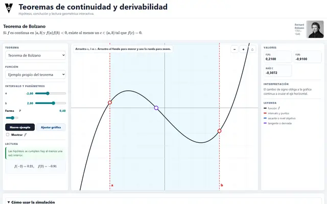
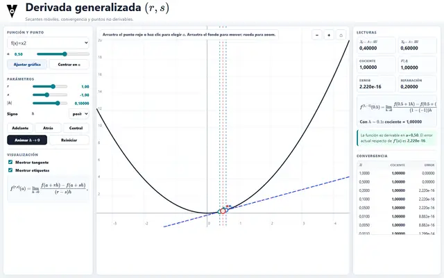
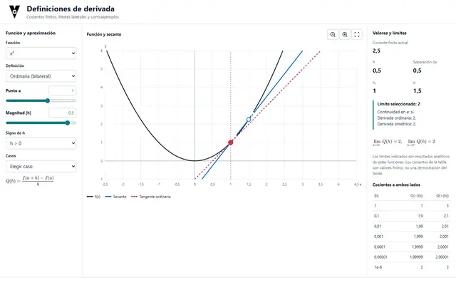
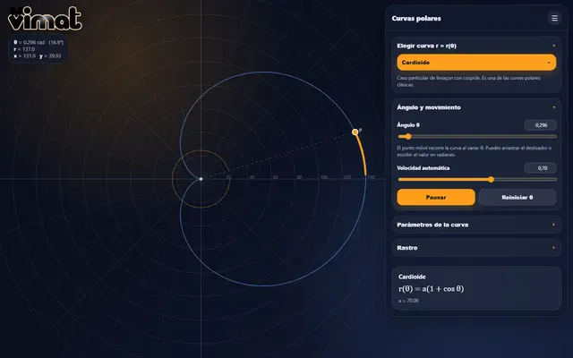
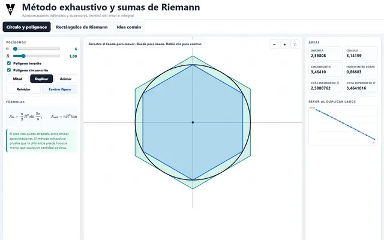
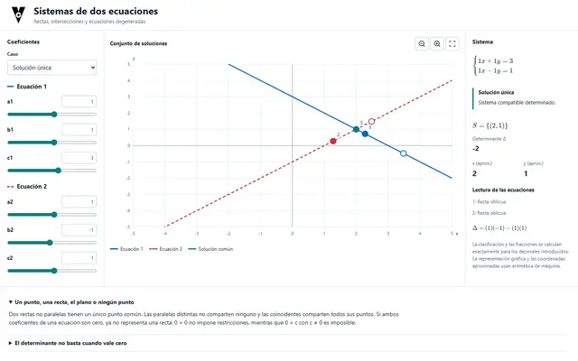
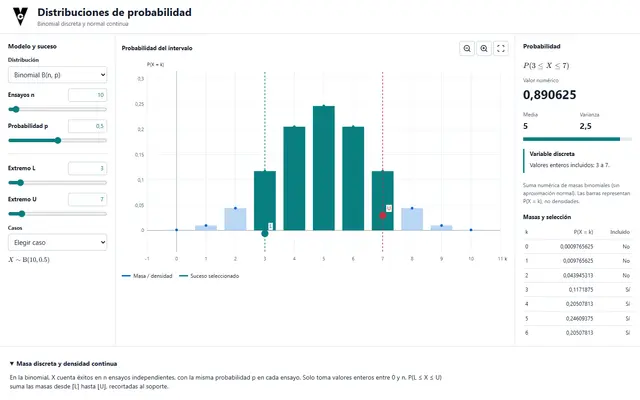

TEMA 4
Representación de funciones


TEMA 7
Sistemas de ecuaciones. Gauss

TEMA 13
Problemas métricos en el espacio


TEMA 15
Distribuciones de probabilidad
Presentaciones y otros recursos
Webs de consulta
Apuntes del curso: edición 2024. Se mantienen los enlaces originales a los materiales de VConce.